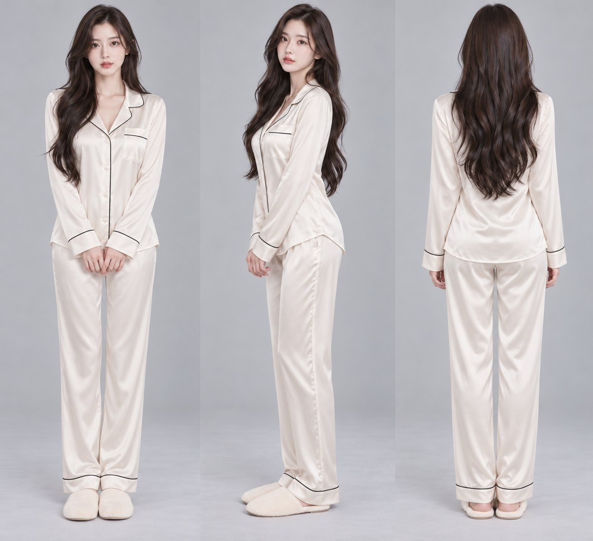
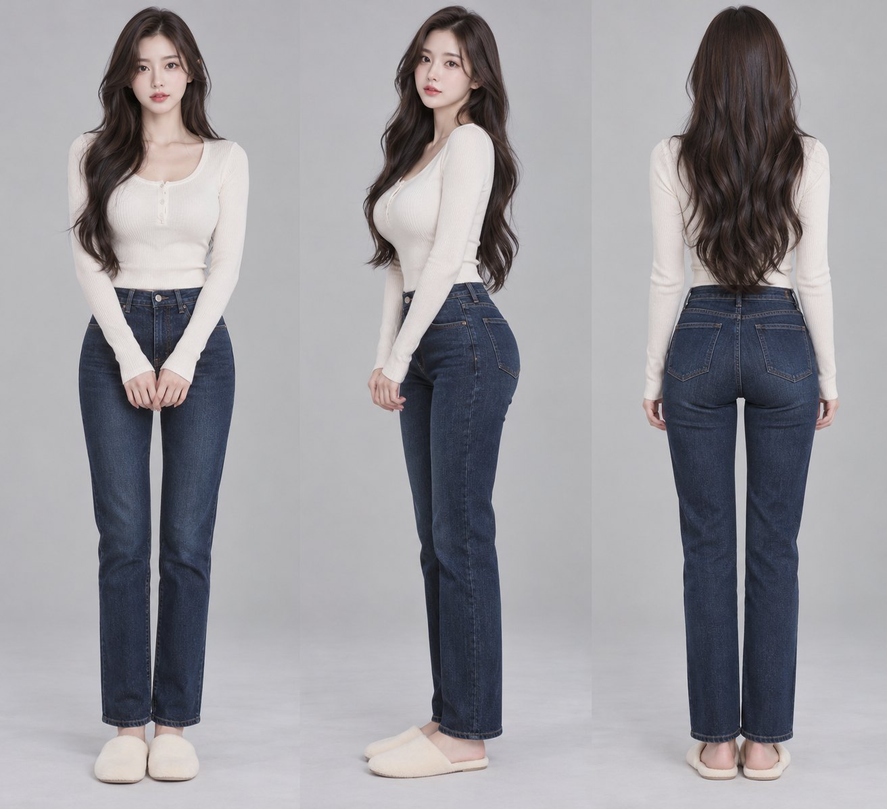
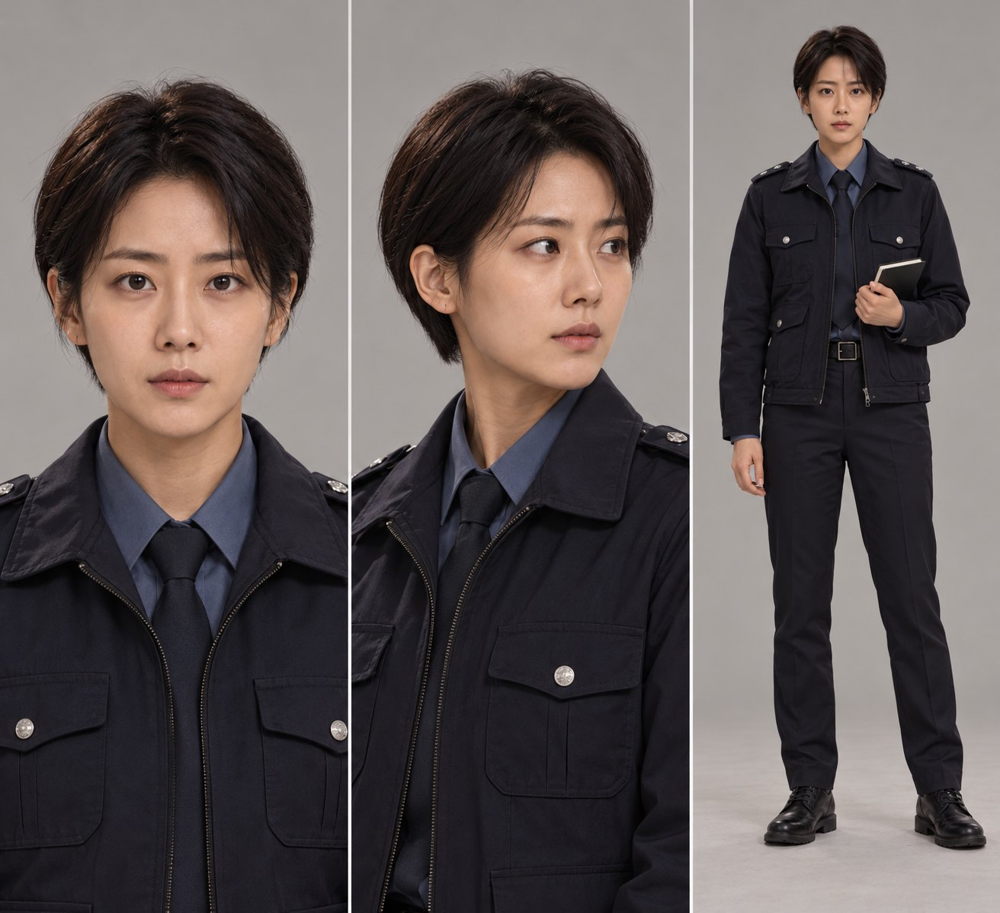
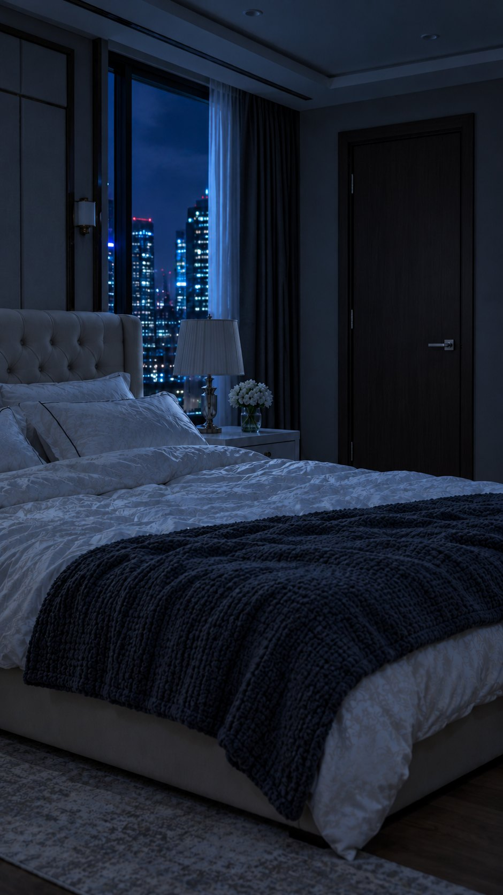
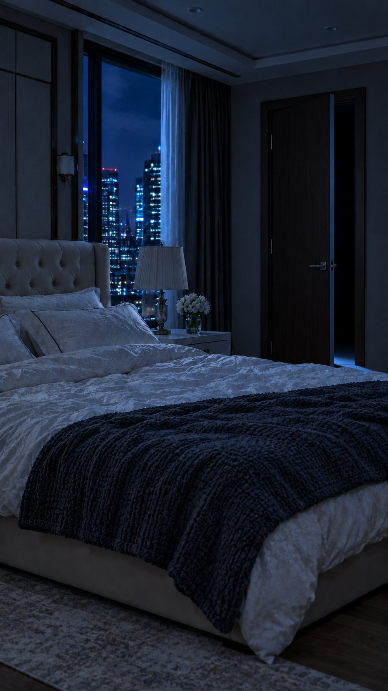
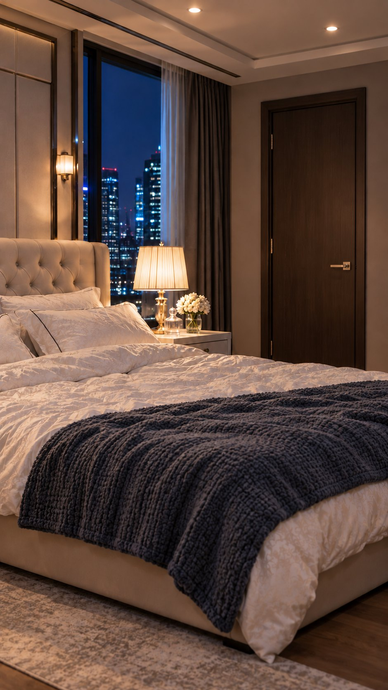
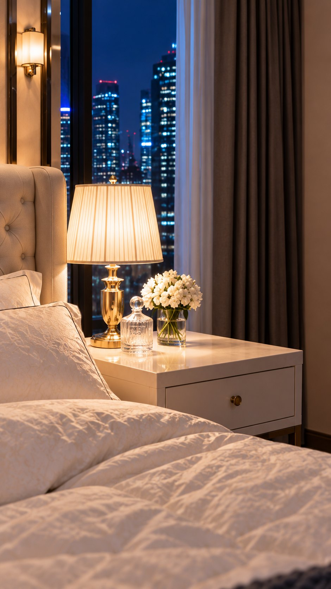
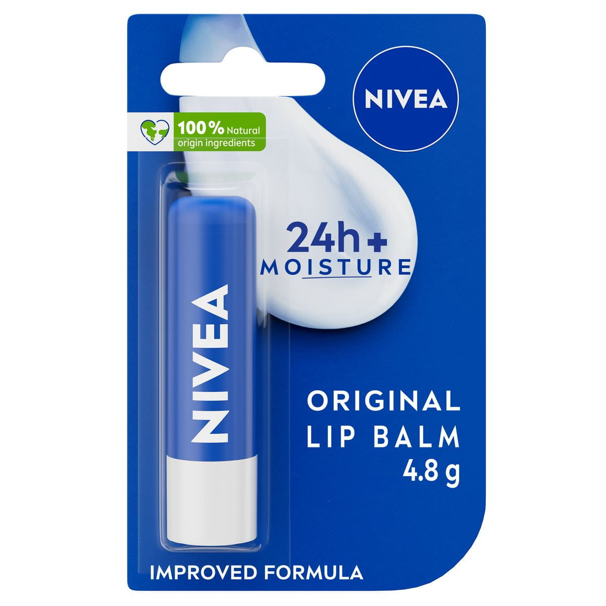
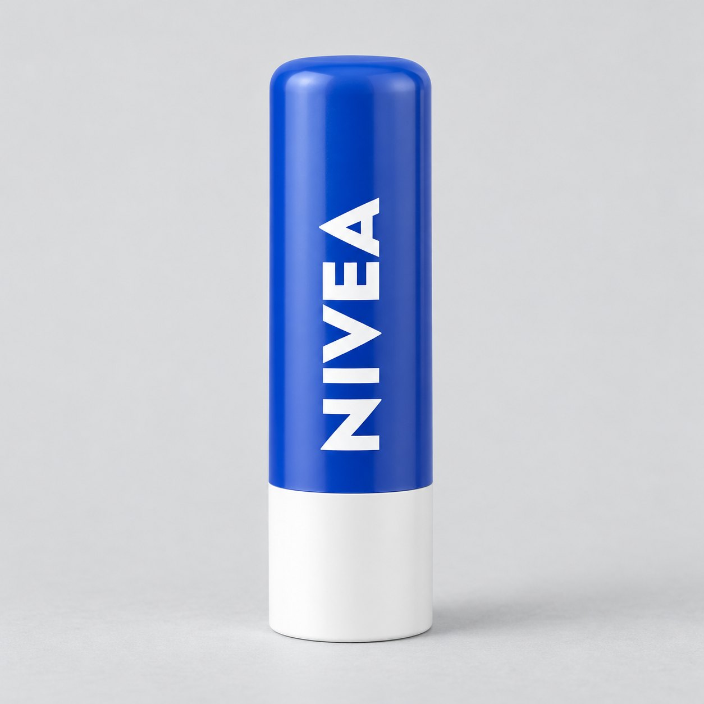
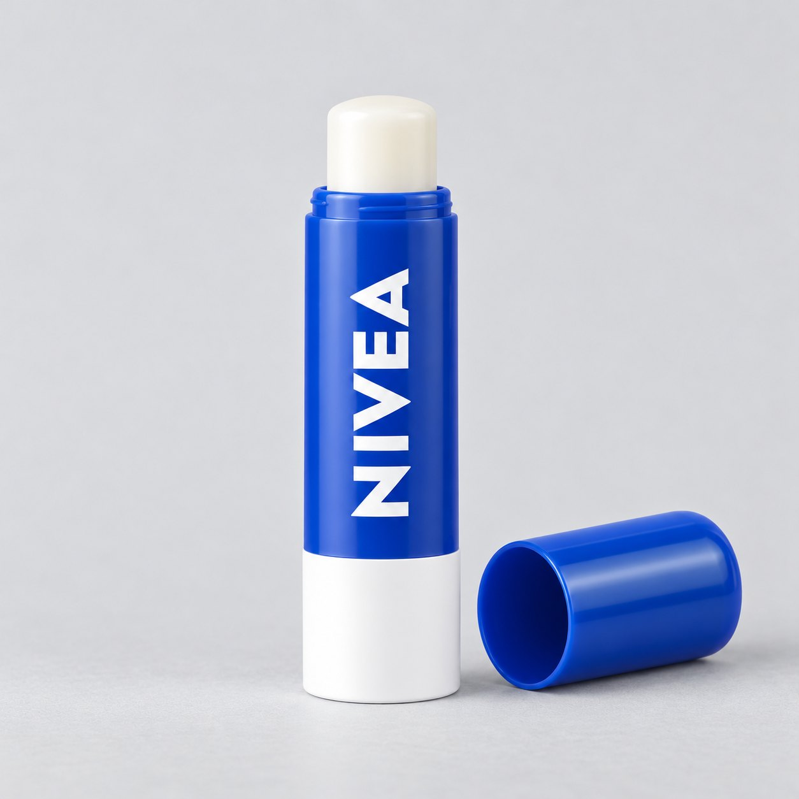

〈수사의 일부분〉 배우·장소·소품
잠옷 장면과 경찰 조사 장면은 같은 배우, 다른 의상입니다. 장소도 한 집이지만 침입 직전·열린 문·조사 조명·협탁 근경을 각각 고정했습니다. 번호 순서대로 확인해 주세요.
배우 4장
01 · 유나 — 새벽 잠옷 / 수정안

C01–03. 아이돌다운 얼굴·헤어와 날씬한 체형. 아이보리 새틴 잠옷.
02 · 유나 — 경찰 조사 평상복 / 수정안

C04–14. 01번과 같은 배우 얼굴·머리. 몸에 맞는 크림 니트·청바지.
03 · 형사

C04–14. 실제 사건을 조사하는 차분한 형사. 립밤을 본 후 표정 전환.
04 · 여자 보조 경찰 / 현행 정본

조사 중 기록하는 여성 경찰. 립밤을 바르는 인물은 03번 남자 형사. 마지막에 그를 수갑 채워 끌고 나간다.
같은 침실의 상태·화각 4장
05 · 새벽 침실 / 문 닫힘

C01. 잠든 유나의 배경. 실내 조명 꺼짐.
06 · 새벽 침실 / 문 열림

C02–03. 같은 방·같은 방문이 열림. 침입자 얼굴은 정본에 없음.
07 · 경찰 조사 침실

C04–05 및 이후 대화. 기존 배경의 임의 파란 튜브를 제거한 후속 컷용 배경.
08 · 협탁 근경

C06·09. 같은 방의 협탁. 제품 자리만 비워 두고 실제 소품 참조를 별도 사용.
립밤·수갑 소품 4장
09 · 제조사 공식 포장 사진

제조사 원본. 영문 ORIGINAL LIP BALM 4.8g 포장. 한국 판매 옵션과 포장 일치 여부는 최종 팩샷 전에 대조 필요.
10 · 소품 형태 / 닫힌 스틱

C06–08. 공식 사진을 참조해 만든 촬영 소품 가이드. 실제 패키지 증빙용은 아님.
11 · 소품 형태 / 열린 스틱

C10. 뚜껑을 연 같은 스틱. 한 컷에 같은 제품 한 개만 등장하도록 사용.
12 · 여자 경찰의 수갑 소품
C15. 여자 경찰이 남자 주연 형사에게 채우는 수갑 한 쌍. 드라마는 그를 끌고 나가는 장면으로 끝나고 제품 화면으로 넘어간다.
이 페이지는 이미지 정본 검수용입니다. H3 영상 입력에는 장면마다 필요한 배우 단독 참조와 해당 배경 한 장을 사용하며 장면 키프레임을 기본 입력으로 쓰지 않습니다.